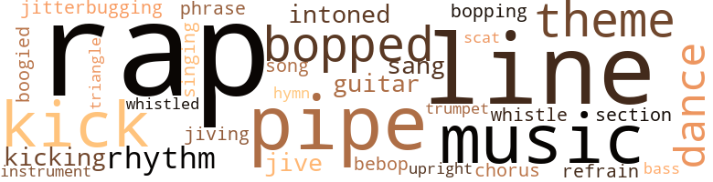
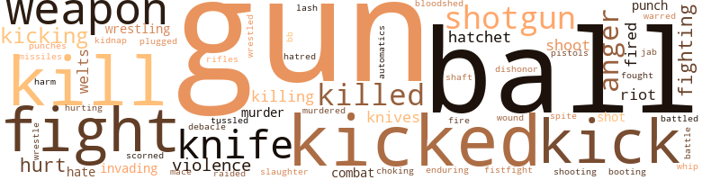
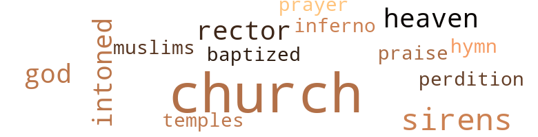

City Cool, by De Jongh, James & Charles Cleveland (1978)
84 music-related terms matched in this text.
Most frequent terms in this topic: rap (15); pipe (6); line (6); bopped (4); music (4)
bass.n.07
Definition: the member with the lowest range of a family of musical instruments
| word | sentence |
|---|---|
| bass | The cats on lead and bass guitar went into their shit , dancing towards each other until heads bobbed together and swung apart to the rhythm of the music . |
boogie.v.01
Definition: dance to boogie music
| word | sentence |
|---|---|
| boogied | Chicks - in miniskirts , pantsuits and hot pants - wiggled their behinds down on the floor while cats - in mohair and doubleknits from Franklin 's Men 's Stores of Harlem and Fulton and Nostrand - boogied down with the jerky , belly-to - backside motions of the " breakdown , " the " penguin " and the " funky chicken . " |
bop.n.02
Definition: an early form of modern jazz (originating around 1940)
| word | sentence |
|---|---|
| bebop | And near them , on the other side of the chain separating the sidewalk from the green , a young jitterbugging street cat - in sneakers , sunglasses and a bebop hat - was talking to his lady and pushing a blue baby carriage along like he owned the world . |
bop.v.01
Definition: dance the bebop
| word | sentence |
|---|---|
| bopped | Sweet Life spotted three young ladies sitting together , bopped over and started to run a line . |
| bopping | We all started bopping to Forty-second and Seventh Avenue , sporting our moves . |
| bopped | I bopped right along with the brothers , reaching for my individual style , jutting my shoulder forward with one hand stiff at my side and the other nestled lovingly on my balls as if I was knocking down a door . |
| bopped | They bopped in and stood around , would n't sit for a long time because nobody wanted to wrinkle his coat or pull out his shirt and get it puffy . |
| bopped | They were streetwise for their age and bopped around thinking they were bad . |
cornet.n.01
Definition: a brass musical instrument with a brilliant tone; has a narrow tube and a flared bell and is played by means of valves
| word | sentence |
|---|---|
| trumpet | And when he was n't singing , he played the trumpet . |
dance.n.01
Definition: an artistic form of nonverbal communication
| word | sentence |
|---|---|
| dance | The dancer in the dance . |
| dance | " We could chip in and throw a dance . |
| dances | The Showstoppers were dances held a few times a year in different parts of New York City . |
guitar.n.01
Definition: a stringed instrument usually having six strings; played by strumming or plucking
| word | sentence |
|---|---|
| guitar | Maceman sat down by the stereo equipment under Minihawk 's sketch of the would-be record shack , plucking silently at his electric guitar , listening through earphones . |
| guitar | The cats on lead and bass guitar went into their shit , dancing towards each other until heads bobbed together and swung apart to the rhythm of the music . |
hymn.n.01
Definition: a song of praise (to God or to a saint or to a nation)
| word | sentence |
|---|---|
| hymn | Then Dr. Williams led the congregation in a hymn about " walkin ' the streets of gold , " and the service was over . |
jitterbug.v.01
Definition: do the jitterbug
| word | sentence |
|---|---|
| jitterbugging | And near them , on the other side of the chain separating the sidewalk from the green , a young jitterbugging street cat - in sneakers , sunglasses and a bebop hat - was talking to his lady and pushing a blue baby carriage along like he owned the world . |
jive.v.01
Definition: dance to jive music; dance the jive
| word | sentence |
|---|---|
| jiving | A couple more Pearls left the bank and strolled over , jiving with the girls . |
kick.v.04
Definition: kick a leg up
| word | sentence |
|---|---|
| Kick | " Kick his ass . " |
| kick | " Let 's all kick his ass ! " |
| kicking | Executioner took Candy out that same Sunday and they started kicking around together . |
| kick | I sighted behind the cue ball and stroked the stick to get the feel of just how hard to kick . |
| kick | " Man , they kick my ass . |
| Kick | Kick their asses . |
| kicking | " Hey , Prince , " he yelled , kicking again . |
music.n.01
Definition: an artistic form of auditory communication incorporating instrumental or vocal tones in a structured and continuous manner
| word | sentence |
|---|---|
| Music | Music was blasting from the backyard , but first we went inside to say hello to the older generation and to pay our respects to her granddad . |
| music | Back in the ballroom the faster music had replaced the earlier slow records . |
| music | People left the tables where the garbage and empty bottles were piling up and got out on the polished floor grooving to the music . |
| music | The cats on lead and bass guitar went into their shit , dancing towards each other until heads bobbed together and swung apart to the rhythm of the music . |
| Music | Music blew towards us on the wind and was mysteriously snatched away . |
| music | The steps of my tenement were worn ; the bricks had never been steam-sprayed and the trimmings were a long time waiting for some paint , but they held off the elements as always and rocked happily in the sun to the music on somebody 's radio . |
musical_instrument.n.01
Definition: any of various devices or contrivances that can be used to produce musical tones or sounds
| word | sentence |
|---|---|
| instrument | When the glove was turned rightside , it became a flesh-tearing instrument . |
phrase.n.02
Definition: a short musical passage
| word | sentence |
|---|---|
| phrase | was a phrase I heard a million times a day . |
pipe.n.04
Definition: a tubular wind instrument
| word | sentence |
|---|---|
| pipe | A delegation of top dogs from four different gangs , led by Executioner , was picked to rap to the gangs outside YSA , inviting them to rally to smoke the peace pipe and organize the family . |
| pipe | They took Minihawk to the basement of an abandoned building on 126th Street and tied his arms , spread-eagle , to an exposed overhead pipe . |
| pipe | The Hawk hung from an overhead pipe like a battered human doll some malicious boys had strung up on a nail to knock its insides out . |
| pipe | He cut the Hawk down from the pipe and carried him out , cradled tenderly in his arms as I leaned against a wall in the basement tasting my puke . |
| pipe | " You thinkin ' somethin' about me ? " he screamed , and walked towards me with an iron pipe . |
| pipes | I dashed across the obstacle course on the roof of rotting clothesline , ventilation pipes and broken glass toward the far end of the block away from the police . |
| pipe | The bitch had looked so much like a woman , it hurt to think she carried a pipe between her legs like l did . |
rap.n.05
Definition: genre of African-American music of the 1980s and 1990s in which rhyming lyrics are chanted to a musical accompaniment; several forms of rap have emerged
| word | sentence |
|---|---|
| rap | The girls giggled and Life decided to rap . |
| rap | I want to rap to you anyway . |
| rap | " Well , I just want to rap to you . |
| rap | I 'll talk to him this afternoon and we can rap about it . " |
| rap | He pulled on one and started to rap . |
| rap | Nobody said anything , but I began to dig on Minihawk 's rap . |
| rap | And the only way is to get out there and rap . " |
| rap | A delegation of top dogs from four different gangs , led by Executioner , was picked to rap to the gangs outside YSA , inviting them to rally to smoke the peace pipe and organize the family . |
| rap | " Well , I 'll rap to you later . " |
| rap | We be able to sit down and rap ' bout what 's on our mind so we do n't give each other no flak . |
| rap | Throw out your questions and let 's rap . " |
| rap | Executioner 's rap was right on the button . |
| rap | And Sweet Life muttered , " That 's an amen rap . " |
| rap | But like most cats , the Sixers wanted to be free to rap to the new chicks there from all over . |
| rap | Cats walked around until they saw a chick they wanted to rap to , watching her to see if she was with somebody , waiting until the band played a slow number , sliding over , hitting on her , rapping to see where she was coming from . |
refrain.n.01
Definition: the part of a song where a soloist is joined by a group of singers
| word | sentence |
|---|---|
| chorus | The chicks had chorus practice every Thursday night , and the cats all got together , making Executioner go down there with them . |
| refrain | " Young man , would you please refrain from the profanity and quiet down ? " |
rhythm.n.04
Definition: the arrangement of spoken words alternating stressed and unstressed elements
| word | sentence |
|---|---|
| rhythms | His arms and elbows swung back and forth across that line , resonating to the syncopated rhythms of his mind . |
| rhythm | The cats on lead and bass guitar went into their shit , dancing towards each other until heads bobbed together and swung apart to the rhythm of the music . |
| rhythm | My temples throbbed and my brain pounded to the rhythm of my heart . |
scat.n.01
Definition: singing jazz; the singer substitutes nonsense syllables for the words of the song and tries to sound like a musical instrument
| word | sentence |
|---|---|
| scat | The one in the front passenger scat trained a sawed-off shotgun at me . |
section.n.01
Definition: a self-contained part of a larger composition (written or musical)
| word | sentence |
|---|---|
| section | A shelf boasted about a dozen trophies in the section of the Beehive reserved for weights . |
sing.v.02
Definition: produce tones with the voice
| word | sentence |
|---|---|
| sang | A college band from a Southern school paraded and James Moody sang blues for the people with Eddie Jefferson on the corner of 126th Street . |
| sang | My man was clowning , running around the stage , performing antics with a cape while he sang . |
singing.n.01
Definition: the act of singing vocal music
| word | sentence |
|---|---|
| singing | And when he was n't singing , he played the trumpet . |
song.n.01
Definition: a short musical composition with words
| word | sentence |
|---|---|
| song | The number one group of the period blasted on stage with its number one song . |
swing.n.05
Definition: a style of jazz played by big bands popular in the 1930s; flowing rhythms but less complex than later styles of jazz
| word | sentence |
|---|---|
| jive | " Do n't start no jive down here , 'cause you know everybody lose they gig if y' all fuck around . " |
| jive | Executioner said , " We just got to do that door-to-door jive . " |
theme.n.03
Definition: (music) melodic subject of a musical composition
| word | sentence |
|---|---|
| theme | Sweet Life turned to me as The Godfather theme played under the opening credits . |
| theme | A street fair was planned for Harlem on Sunday the 2nd with " Nationtime " as the theme . |
| theme | The leaders promised to go back to their boys , pulling their coats about the theme of Nationtime , and the Harlem Street Fair was designated neutral turf as a test case to see if the truce could hold . |
| theme | Iceman picked up his theme . |
tone.v.01
Definition: utter monotonously and repetitively and rhythmically
| word | sentence |
|---|---|
| intoned | " You ca n't bogart the Apollo , " Minihawk intoned from his Black Consciousness bag . |
| intoned | " With our blood and your blood , " he intoned , " we are now one . " |
triangle.n.05
Definition: a percussion instrument consisting of a metal bar bent in the shape of an open triangle
| word | sentence |
|---|---|
| triangle | " You ca n't diaper the nigger without powder , " I teased as he lowered his backside to the cloth triangle . |
tune.n.01
Definition: a succession of notes forming a distinctive sequence
| word | sentence |
|---|---|
| line | Sweet Life spotted three young ladies sitting together , bopped over and started to run a line . |
| line | When we finally got to The Godfather , there was this really long line . |
| line | " That may be so , " Maceman retorted , " But I still ai n't waitin ' on no line . |
| lines | But gradually an image of the same leopard appeared , consisting this time of splotches and lines , pure white or pure black , revealing the tensile , encaged violence of that feline powerhouse without photographically depicting the beast . |
| line | " Maybe I 'll drop her a line . " |
| line | " It would have been nice if we could have hooked up a party line . |
| line | Nobody had anything else on line . |
upright.n.02
Definition: a piano with a vertical sounding board
| word | sentence |
|---|---|
| upright | He jerked upright on the sofa , then slouched forward in a sitting position still sound asleep . |
whistle.v.01
Definition: make whistling sounds
| word | sentence |
|---|---|
| whistle | There was a police whistle and a lot of yelling . |
| whistled | I was ready to hack down when Executioner whistled at me like a chick who turned him on . |
241 violence-related terms matched in this text.
Most frequent terms in this topic: gun (18); kicked (15); kill (13); balls (12); kick (11)
anger.n.01
Definition: a strong emotion; a feeling that is oriented toward some real or supposed grievance
| word | sentence |
|---|---|
| anger | The anger in her cheeks matched the sandy red hair she swept to one side . |
| anger | " Y' ho , man , " he said without anger , " I 'm me and I do what I do . |
| anger | The dark skin around his eye stretched tight in anger . |
| anger | I hate every bit of it , but have your fun , " Li ' l Boy hissed between anger and tears . |
| anger | His excitement turned to anger . |
| anger | There was an occasional jab of anger but most dudes waited in silence . |
| anger | I felt safer in bed caressed by the darkness and the crisp texture against my the anger faded , the fear and tension drained from my flesh . |
| anger | They were involved in their anger , but from where I sat it sounded incomprehensible and absurd . |
automatic_rifle.n.01
Definition: light machine gun
| word | sentence |
|---|---|
| automatics | The other box contained six .38 's , two .45 's , ten .22 automatic target pistols and five .25 automatics . |
battle.v.01
Definition: battle or contend against in or as if in a battle
| word | sentence |
|---|---|
| battle | You gone be with us when it 's time to go to battle ? " |
| battled | He escaped down an alley between the buildings while we battled the relentless hose . |
bb.n.01
Definition: a small pellet fired from an air rifle or BB gun
| word | sentence |
|---|---|
| bb | I swished under my arms with a washcloth and wiped my face without soap to get the bb 's out of my eyes . |
bloodshed.n.01
Definition: the shedding of blood resulting in murder
| word | sentence |
|---|---|
| bloodshed | " If we can hit 'em without shootin ' the works , we save bloodshed and the war be over a lot sooner . |
boot.v.01
Definition: kick; give a boot to
| word | sentence |
|---|---|
| booting | Maceman and Sweet Life shoved the dude off the train with a kick , booting him headfirst towards a pole . |
contemn.v.01
Definition: look down on with disdain
| word | sentence |
|---|---|
| scorned | " Shi-i-i-i-it ! " she scorned him and turned away , buttoning her blouse . |
fight.n.02
Definition: the act of fighting; any contest or struggle
| word | sentence |
|---|---|
| combat | We 're an army in combat . |
| combat | Hand-to-hand combat erupted on the stairs as we pushed up to the second floor and Sweet Life 's boys bored down from above . |
fight.n.05
Definition: a boxing or wrestling match
| word | sentence |
|---|---|
| fight | " I ai n't gone fight you , baby ! " |
| fight | You do n't just step in between somebody 's fight , especially not the Death Squad 's or the Black Pearls ' . |
| fight | Why y' all gone fight about some unnecessary shit over a bitch . " |
| fights | A couple fights broke out and the belligerents were evicted . |
| fight | " But it 's sure got a great fight scene ! " |
fight.v.02
Definition: fight against or resist strongly
| word | sentence |
|---|---|
| fought | I fought like hell to hold him , but he broke free and tried to run . |
| fight | When Executioner let him go , Sweet Life jumped up in his Mean Joe Greene bag ready to fight . |
| fighting | Otherwise , it was fighting over the TV sets and hanging out at your woman 's house . |
| fighting | Ex 's moms turned to us , fighting the tears . |
| fights | But it seems that everythin ' I try to do to help , he just fights off in all kinds of ways . " |
| fight | A COUPLE WEEKS AFTERWARD THE SlXERS were in the clubhouse talking about the record shack when Minihawk asked if anybody thought we could win a war without ever having to fight . |
| fight | " He won his most important victories without havin ' to fight . |
| fight | We gone have to fight somewhere . " |
| fight | " We must stop the killing of our brothers and fight the cock-suckers that ride the white horse for fancy clothes and big diamond rings . |
| fight | Li ' l Boy screamed and tried to fight while Iceman pumped inside . |
| fighting | The brothers swallowed hard , fighting their emotions , yet you could hear sobs and sniffles breaking the silence . |
| fighting | Like men we 'll face the murderous , cowardly pack , Pressed to the wall , dying , but fighting back ! |
| fight | You always had what you needed , and l had to fight for what I needed . |
| fighting | My legs were fighting her hands as she opened my zipper and messed around in my jeans . |
fistfight.n.01
Definition: a fight with bare fists
| word | sentence |
|---|---|
| fistfight | Somebody punched somebody ; a fistfight erupted . |
gag.v.06
Definition: cause to retch or choke
| word | sentence |
|---|---|
| choking | The air was choking . |
gun.n.01
Definition: a weapon that discharges a missile at high velocity (especially from a metal tube or barrel)
| word | sentence |
|---|---|
| gun | He placed the gun in the middle of the table . |
| gun | I shot out my arm to snatch the gun , but Executioner 's hand got there first . |
| gun | " Yeah , " I answered " If you let me pick up the gun . " |
| gun | He aimed his finger at Iceman like a gun and pulled the trigger . |
| gun | The Death Squad president went for his weapon , but Sweet Life showed him a gun . |
| gun | Executioner hid his gun in his pocket , and Sweet Life tucked his gun under his arm inside his jacket . |
| gun | Executioner hid his gun in his pocket , and Sweet Life tucked his gun under his arm inside his jacket . |
| gun | " Turn her loose , " Iceman stuck his gun to Li ' l Boy 's head and the dude dropped his hand . |
| guns | I was sitting between three guns not knowing what was up . |
| gun | New York City pulled his gun but the laughter continued , taunting . |
| gun | Li'I Boy tore the gun from his lieutenant and fired , drowning out the laughter for a moment . |
| gun | But he broke the cylinder open , let the cartridges fall to the floor and handed me the empty gun . |
| gun | I said , feeling the gun underneath my shoulder . |
| gun | For a moment I wanted to run I 'd never been in a situation like that , holding up a store in broad daylight with a gun and without a inask . |
| gun | We all was under that gun . |
| gun | Prince put a gun to Ace 's head . |
| gun | I had to make that old man take my gun seriously even if I had to hit him with it . |
| gun | He was zapping cats with the Spider-man mace gun he 'd invented that earned him his name . |
| guns | Hoses blasted down the street , knocking dudes over and kicking them into the air , whipping guns out of their hands . |
| guns | Then suddenly more guns exploded . |
| gun | Like a sleepwalker wandering out of the sphere of dreams , he stepped from the shadows into the glare at the top of the stoop with an empty gun in his hand . |
hate.n.01
Definition: the emotion of intense dislike; a feeling of dislike so strong that it demands action
| word | sentence |
|---|---|
| hatred | Just up the cash , " I said with all the hatred I could muster . |
hate.v.01
Definition: dislike intensely; feel antipathy or aversion towards
| word | sentence |
|---|---|
| hate | " I 'd hate to mess up your cute little face . " |
| hate | I hate every bit of it , but have your fun , " Li ' l Boy hissed between anger and tears . |
injury.n.01
Definition: any physical damage to the body caused by violence or accident or fracture etc.
| word | sentence |
|---|---|
| hurt | The shit hurt , did n't it ? |
| harm | " The dude did n't mean no harm . |
| hurt | And the working-over hurt because your boys did n't pull their punches . |
invade.v.01
Definition: march aggressively into another's territory by military force for the purposes of conquest and occupation
| word | sentence |
|---|---|
| invading | There was a lot of cash on the table for Milkman , and the Sixers were discussing how to pay back the Death Squad for invading our turf . |
| invading | The identical skull-emblazoned jackets transformed us from a bunch of ordinary street kids - so young only a couple had facial hair - to a wedge of masculinity invading the confines of the subway car . |
jab.n.02
Definition: a quick short straight punch
| word | sentence |
|---|---|
| jab | There was an occasional jab of anger but most dudes waited in silence . |
kick.v.04
Definition: kick a leg up
| word | sentence |
|---|---|
| Kick | " Kick his ass . " |
| kick | " Let 's all kick his ass ! " |
| kicking | Executioner took Candy out that same Sunday and they started kicking around together . |
| kick | I sighted behind the cue ball and stroked the stick to get the feel of just how hard to kick . |
| kick | " Man , they kick my ass . |
| Kick | Kick their asses . |
| kicking | " Hey , Prince , " he yelled , kicking again . |
kick_back.v.02
Definition: spring back, as from a forceful thrust
| word | sentence |
|---|---|
| kicked | And while we kicked his ass , Life cut his pants open in back , letting his wallet fall to the floor . |
| kicked | The Death Squad kicked my ass right there in the movie lobby until suddenly tbe Sixers were on top of them . |
| kicked | " So now you ready to leave the gang because you got your ass kicked . |
| kicked | Why did n't you split when the Death Squad kicked your behind ? " |
| kick | We got to kick ass to stay ahead on our turf . |
| kicking | They did n't belong in my English class , but the teacher would n't dare to even think about kicking them out . |
| kicking | He did n't seem to feel the vibes be was kicking out . |
| kick | " I 'm talkin ' to him , but if you want I kick your ass , too ! " |
| kicked | She kicked at me and missed as I kept back-pedaling towards the bedroom door . |
| kicked | I grabbed her around the waist and kicked the door shut behind me . |
| kick | " A muthafucka fuck with me I kick his fuckin ' ass , " Iceman grumbled , but his heart was n't in it . |
| kick | Say he kick my ass just for lyin ' . |
| kick | I wan ' ed to get up but he call me scumbag 'n' kick me so I could n't move . |
| kick | Then they hear somebody come 'n' one of 'em kick me in the back a my head an ' tha 's all I ' member . " |
| kicked | " For the committee , " Executioner kicked off the business of the meeting , " I want to thank you brothers who turned out . |
| kick | I do n't know if y' all can kick out , cuttin ' sentences and shit , postin ' bail and getting muthafuckas out on probation . |
| kicked | Some junkies caught him and kicked his ass . |
| kicked | Sweet Life kicked one of the Gravediggers off Iceman while Maceman and Minihawk pulled Iceman off of Mickey . |
| kicked | I kicked one cat in the face with my spiked combat boots as he lunged for his stash , while Prince , Mace and Sweet Life wasted the other guy . |
| kicked | " Ex , they kicked our ass , man . |
| kicked | " It happened that time Li'I Boy kicked my ass . |
| kick | He kick my ass , then he offer me a place in the Squad if everything come off right . " |
| kicked | His feet struggled and kicked in front of me as I stared past to stay composed . |
| kicking | But before they could adjust to the charge , Sweet Life was kicking ass from above . |
| kicking | Hoses blasted down the street , knocking dudes over and kicking them into the air , whipping guns out of their hands . |
| kicking | Then they brought out some broads and reefer , kicking off an initiation orgy that would make Hugh Hefner jealous . |
| kicked | And you kicked his ass everytime you caught him because the game did n't end until every runner was captured at least once . |
| kicked | He cleared his head and kicked the upper bunk where it sagged towards him in the middle . |
kidnap.v.01
Definition: take away to an undisclosed location against their will and usually in order to extract a ransom
| word | sentence |
|---|---|
| kidnap | Let 's kidnap Li'I Boy , snatch off his threads and throw him out on the stage in his drawers . " |
kill.v.10
Definition: cause the death of, without intention
| word | sentence |
|---|---|
| kill | The first time I got down with the Superior Sixers street gang , they were playing " catch and kill " on a side street between Seventh and Eighth avenues in Harlem . |
| killed | " That Executioner done prob ' ly killed somebody already . |
| kill | Get you outside , you want to kill the whole world . |
| kill | Well , pick it up and kill me to death . " |
| kill | But it takes a crazy nigger to kill , and I know you ai n't crazy . |
| kill | Li ' l Boy smiled a Bogie smile that could kill . |
| kill | " I 'm gone kill that sumbitch . |
| kill | If we kill Lil ' Boy now , we gone have half the gangs in Harlem down on us . |
| killed | One of the bandits was killed , but Nixon was renominated for four more years . |
| kill | You put your creativity to work on an outfit way in advance and the brothers and sisters came to kill . |
| Kill | " Kill the crazy nigger , " Li'I Boy shouted . |
| kill | Well , I knew it was part of the initiation to scare me out of my mind thinking they were going to kill me , but from where I sat that shit did n't seem so funny . |
| killed | " You 've done everything there is to do in a gang except go to jail or get killed ! " |
| killed | " Did you know the guy that was killed last night ? " |
| killed | What makes you think you 're obligated to hang around and get killed with those niggers you run with ! " |
| killed | I ca n't stand by and let somethin' happen to a friend and not do nothin ' about it " " If Minihawk was alive , you think he 'd get himself killed for you ? " |
| kill | I do n't see why you want to kill someone or get yourself killed for no reason . " |
| killed | I do n't see why you want to kill someone or get yourself killed for no reason . " |
| kill | " I 'm gone kill that muthafucka , " Ghetto Prince declared . |
| killed | That 's why not one nigger in the top six had anything to say about Iceman when we found out he was killed . " |
| killed | Ace was dead , whether or not I killed him . |
| kill | I did n't see them kill him , because I was on the roof . |
| kill | " I got involved with a gang , " I confessed , " And I had to kill somebody . " |
killing.n.01
Definition: an event that causes someone to die
| word | sentence |
|---|---|
| killings | I began to wonder if this was one of those perverted killings you read about in the papers . |
| killing | I 'd expected to see a killing , but I was n't ready to be the killer . |
killing.n.02
Definition: the act of terminating a life
| word | sentence |
|---|---|
| killing | " We must stop the killing of our brothers and fight the cock-suckers that ride the white horse for fancy clothes and big diamond rings . |
knife.n.02
Definition: a weapon with a handle and blade with a sharp point
| word | sentence |
|---|---|
| knife | Iceman pulled his knife and slashed at the posters in the car . |
| knife | He was too pissed to think and pulled out his knife . |
| knife | The cat pretended he was going to lay down his knife . |
| knife | Prince and I held his knife , his wallet and his watch , but the cat was still scuffling . |
| knife | Life caught the cat 's free arm and Ice pulled his knife on the dude . |
| knife | But the doors slid open as Iceman swung and the dude jerked back , out of the swiping arc of the knife . |
| knife | Minihawk grabbed at Iceman 's knife . |
| knife | I 'm keepin ' the watch , " Ghetto Prince announced , and Iceman took the fellow 's knife . |
| knives | The danger was of our making , the slashing was from our knives . |
| knives | But with the second hit , hot knives cut my behind . |
| knife | He pull a knife and cut my pants pocket all the way ' round till my money fall out . |
| knife | I had to hit them with a knife before I could eat the pizza . |
| knives | They made the white boys strip off all their clothes and took pictures riding the bare-assed gray boys around the park , spurring their butts with knives to make them gallop . |
mace.n.01
Definition: (trademark) a liquid that temporarily disables a person; prepared as an aerosol and sprayed in the face, it irritates the eyes and causes dizziness and immobilization
| word | sentence |
|---|---|
| mace | He was zapping cats with the Spider-man mace gun he 'd invented that earned him his name . |
malice.n.01
Definition: feeling a need to see others suffer
| word | sentence |
|---|---|
| spite | I could feel things around me in the car , but I could hear only a great silence in my head in spite of the clatter of the wheels . |
murder.n.01
Definition: unlawful premeditated killing of a human being by a human being
| word | sentence |
|---|---|
| murder | Dr. Williams called Minihawk 's murder a " brutal , wasteful act " and he prayed that his memory " be not tarnished with wasteful , brutal reprisals " Ex rose to give a eulogy . |
| murder | " We 're here to re-create that unity in preparation to avenge the Hawk 's foul murder . |
murder.v.01
Definition: kill intentionally and with premeditation
| word | sentence |
|---|---|
| murdered | At the clubhouse we looked at the coverage of the murdered Israeli athletes at the Munich Olympics and discussed the slaughter of the tourists at Fountain Valley in St. Croix . |
musket_ball.n.01
Definition: a solid projectile that is shot by a musket
| word | sentence |
|---|---|
| balls | I bopped right along with the brothers , reaching for my individual style , jutting my shoulder forward with one hand stiff at my side and the other nestled lovingly on my balls as if I was knocking down a door . |
| balls | He racked the balls for me to break . |
| ball | I cracked them open with the cue and the twelve ball fell in the corner slot . |
| ball | I glanced at him , cocked back and hit the fifteen ball , banking it off the side into the corner to take out the fourteen , setting it up in a clear position . |
| ball | Then he missed the three ball . |
| ball | The nine ball was at one end of the table . |
| balls | The ten was sitting near the side pocket and the fifteen was right in front of the corner , giving me the chance to drop two balls with one shot . |
| ball | I sighted behind the cue ball and stroked the stick to get the feel of just how hard to kick . |
| balls | " You almost hit me in the balls . |
| balls | Said it was gone be my balls if I told anybody who they was . |
| balls | Iceman jumped up , cupped his balls with both fists and threw Mickey the bird . |
| balls | I racked up the balls and Sweet Life broke . |
| ball | We grabbed a table with good seats not too far from the stage , having a ball , making noise , acting the fool , being free with ourselves . |
| balls | The Superior Sixers had dragged his balls through the dirt . |
| ball | Next to him was Iceman , nervously knocking a crumpled ball of paper from one hand to the other . |
| balls | They were grabbing at my legs , stretching them apart , exposing my balls to the scorching can of flame . |
| balls | My father was shaking me , and I was clutching at my balls . |
| ball | Tears flooded up as I suppressed the ball of emotion inside . |
| balls | We had to grab our balls and run . |
| balls | Executioner handed the net and balls to the kids . |
open_fire.v.01
Definition: start firing a weapon
| word | sentence |
|---|---|
| fired | But it was understood that major violators could be busted by the police and the members of their gang fired from the job . |
| fired | He fired off the rules to confuse me . |
| fire | " Why they fire you ? " |
| fired | Li'I Boy tore the gun from his lieutenant and fired , drowning out the laughter for a moment . |
pain.v.02
Definition: cause emotional anguish or make miserable
| word | sentence |
|---|---|
| hurt | It was supposed to hurt . |
| hurting | He was hurting me and I did n't want to give him a hint . |
| hurt | She really thought she 'd hurt it . |
| hurt | And more of your friends will get hurt if you try to take some revenge . |
pistol.n.01
Definition: a firearm that is held and fired with one hand
| word | sentence |
|---|---|
| pistols | The other box contained six .38 's , two .45 's , ten .22 automatic target pistols and five .25 automatics . |
projectile.n.01
Definition: a weapon that is forcibly thrown or projected at a targets but is not self-propelled
| word | sentence |
|---|---|
| missiles | On Seventh Avenue , Prince and Milkman were gaining on Iceman like guided missiles on a pigeon . |
punch.n.01
Definition: (boxing) a blow with the fist
| word | sentence |
|---|---|
| punch | The Hawk backed off while Executioner landed a rabbit punch to the back of the dude 's head . |
| punch | I was snatched to safety as Col ' Death rolled on tbe floor in pain from Executioner 's kidney punch . |
| punches | And the working-over hurt because your boys did n't pull their punches . |
punch.v.01
Definition: deliver a quick blow to
| word | sentence |
|---|---|
| plugged | Getting plugged into the Youth Services jobs was n't half hard to do . |
raid.v.01
Definition: search without warning, make a sudden surprise attack on
| word | sentence |
|---|---|
| raided | The cops hit us hardest when they raided Ghetto Prince 's new outpost where he moved after Li ' l Boy knocked out his first communications base . |
rape.v.01
Definition: force (someone) to have sex against their will
| word | sentence |
|---|---|
| dishonor | We believed that tears would dishonor the Hawk . |
rifle.n.01
Definition: a shoulder firearm with a long barrel and a rifled bore
| word | sentence |
|---|---|
| rifles | One had a sawed-off pump shotgun , a double-barreled .12 gauge and two rifles . |
riot.n.01
Definition: a public act of violence by an unruly mob
| word | sentence |
|---|---|
| riot | The Black Berets stepped in to break up the riot . |
| riot | But the clubhouse door crashed open , and Inspector Kirk and Lt. Lawrence burst in with a bunch of uniformed police in full riot gear . |
| riot | Tactical police lined up on both ends of the block in riot gear . |
scuffle.v.02
Definition: fight or struggle in a confused way at close quarters
| word | sentence |
|---|---|
| tussled | They tussled back and forth while the white couple tried to act liberal and understanding . |
shoot.v.02
Definition: kill by firing a missile
| word | sentence |
|---|---|
| Shoot | " Shoot me , muthafucka . |
| shot | " Who ask you anything , nigger ? " the Death Squad shot back . |
| shoot | " We shoot any man who rides the ghost horse to wealth in our territory . |
| shoot | " Do n't shoot me , Ex . |
| shot | He shot into an apartment building on the other side of the street . |
shooting.n.02
Definition: killing someone by gunfire
| word | sentence |
|---|---|
| shooting | But by the time the Sixers stopped shooting dogwater , the Outlaws were wiped out by drugs , jail or Vietnam . |
shotgun.n.01
Definition: firearm that is a double-barreled smoothbore shoulder weapon for firing shot at short ranges
| word | sentence |
|---|---|
| shotgun | The one in the front passenger scat trained a sawed-off shotgun at me . |
| shotgun | But I was n't going to argue with a shotgun . |
| shotgun | But I was n't arguing with the shotgun . |
| shotgun | One had a sawed-off pump shotgun , a double-barreled .12 gauge and two rifles . |
| shotgun | Executioner was holding the shotgun , and Ghetto Prince was driving . |
| shotgun | The old man in there keep a shotgun . " |
| shotgun | Iceman wrapped his chainmace around the soldier 's head , and Executioner pumped two shots from a sawed-off shotgun into Col ' Death before he was completely out of bed . |
| shotgun | Dressed like a woman and packing an empty .38 , I was supposed to knock off a banker with a shotgun . |
| shotgun | He felt my .38 on his cheek and reached towards the ice-cream bin , where I figured he hid the shotgun . |
| shotgun | I was safe now , and proud , as we drove away from the shopkeeper and his shotgun . |
slaughter.n.03
Definition: the savage and excessive killing of many people
| word | sentence |
|---|---|
| slaughter | At the clubhouse we looked at the coverage of the murdered Israeli athletes at the Munich Olympics and discussed the slaughter of the tourists at Fountain Valley in St. Croix . |
spear.n.01
Definition: a long pointed rod used as a tool or weapon
| word | sentence |
|---|---|
| shaft | Quickly I moved back to my room over the air shaft and stepped out of my drawers into some threads and dashed out of the apartment down the stairs into the street . |
thrashing.n.01
Definition: a sound defeat
| word | sentence |
|---|---|
| debacle | The dog days of August snapped at the heels of our debacle in the church . |
tomahawk.n.01
Definition: weapon consisting of a fighting ax; used by North American Indians
| word | sentence |
|---|---|
| hatchet | I did n't know anymore if the different gangs could bury the hatchet . |
| hatchet | I could see Li ' l Boy , Col ' Death and New York City coming closer in the distance , grinning , brandishing a hatchet , calling for Minihawk , laughing , swinging the hatchet , chanting , " Hawkie , Hawkie baby , where are you ? " |
| hatchet | I could see Li ' l Boy , Col ' Death and New York City coming closer in the distance , grinning , brandishing a hatchet , calling for Minihawk , laughing , swinging the hatchet , chanting , " Hawkie , Hawkie baby , where are you ? " |
twenty-two.n.02
Definition: a .22 caliber firearm (pistol or rifle)
| word | sentence |
|---|---|
| .22 | The next thing I knew I had a .22 automatic in my hand and we were going into the store , but I still thought it was a joke . |
violence.n.01
Definition: an act of aggression (as one against a person who resists)
| word | sentence |
|---|---|
| violence | There the thrill was secondhand , the violence only a fistful of thoughts . |
| violence | But gradually an image of the same leopard appeared , consisting this time of splotches and lines , pure white or pure black , revealing the tensile , encaged violence of that feline powerhouse without photographically depicting the beast . |
| violence | I knew we could turn the violence in us to something creative and pull together for the future . |
| violence | Clothing touched and I sniffed the adrenalin stink of violence and fear . |
wale.n.01
Definition: a raised mark on the skin (as produced by the blow of a whip); characteristic of many allergic reactions
| word | sentence |
|---|---|
| welts | The muscles ached as I lifted each leg , and the welts chafed against my jeans . |
| welts | Slowly , I wiped away my filth and cooled the cuts and welts with a damp cloth . |
| welts | Except for the chicken-bone welts raised on my thighs and ass by the bamboo cane , my skin was smooth as butter . |
war.v.01
Definition: make or wage war
| word | sentence |
|---|---|
| warred | The Sixers , the Yellow Jacks and the Pearls did n't come together in a single organization , but they never warred on each other because they recognized a common descent . |
weapon.n.01
Definition: any instrument or instrumentality used in fighting or hunting
| word | sentence |
|---|---|
| weapon | Life pulled out his weapon . |
| weapon | I 'll even give you the weapon to do it with . " |
| weapon | Executioner pushed the weapon nearer to me . |
| weapon | I picked up the weapon , stroked its expensive surface and touched it to my skin . |
| weapons | The gangs were asked to attend orientation and counseling sessions in peace , to interdict weapons on the job and to grant free passage on their turf during working hours and at special night events . |
| weapon | The Death Squad president went for his weapon , but Sweet Life showed him a gun . |
| weapons | Iceman was to find operating headquarters away from the clubhouse and each capo regime was ordered to set up and put his soldiers to work manufacturing hand weapons to Maceman 's specifications . |
| weapons | I told half the boys to go hold Li ' l Boy on the street for ' bout five minutes so we could get the weapons and clear out . " |
| weapons | " We got to see a man about some weapons . |
| weapons | All hell broke loose as the Death Squad snatched up their weapons and poured out of the rooms to counterpunch . |
| weapon | When we got to the third floor , Prince had New York City cornered without a weapon in one of the rooms . |
| weapon | The old man did n't want to get ripped off , but lie obeyed my weapon . |
| weapons | Mounted police moved in on the chumps without weapons , trampling , beating them down with clubs . |
weather.v.01
Definition: face and withstand with courage
| word | sentence |
|---|---|
| enduring | The buildings behind him were soft , lingering images , just out of focus , setting off that enduring beat-up face . |
whip.v.04
Definition: strike as if by whipping
| word | sentence |
|---|---|
| lash | On the third lash , one leg caved in , collapsing me against the wall . |
worst.v.01
Definition: defeat thoroughly
| word | sentence |
|---|---|
| whip | I whipped your ass and if I have to I 'll whip it again . |
wound.n.01
Definition: an injury to living tissue (especially an injury involving a cut or break in the skin)
| word | sentence |
|---|---|
| wound | I could n't see the wound . |
wrestle.v.01
Definition: combat to overcome an opposing tendency or force
| word | sentence |
|---|---|
| wrestled | I tackled him and we wrestled . |
| wrestling | Two little dudes were wrestling on the grass . |
| wrestle | Iceman made me wrestle and lift weights . |
| wrestling | Iceman was powerfully built , and his physicality was punishment , rough stuff , grabbing somebody , pounding on them , wrestling . |
42 religion-related terms matched in this text.
Most frequent terms in this topic: church (23); rector (2); sirens (2); God (2); intoned (2)
baptize.v.01
Definition: administer baptism to
| word | sentence |
|---|---|
| baptized | So I 'd been baptized . |
church.n.02
Definition: a place for public (especially Christian) worship
| word | sentence |
|---|---|
| church | The cats were in a mellow mood , laughing and joking , coming down from a high , when they saw these girls , dressed-up , going to church . |
| church | How long she 'd been going to this church , where she went to school and such . |
| church | She asked him if he wanted to go to church with her , and he just laughed . |
| church | The girls went on to church and the fellows laid back , waiting . |
| church | But when Candy came out of the church , Executioner had disappeared . |
| church | " C'mon , " he said to Prince , " let 's go to church . " |
| church | C'mon , let 's go to church . " |
| church | He 'd walk her home after rehearsal and after church . |
| church | The rally was held the next day in a fashionable Harlem church that the congregation let us use as a show of community interest and support . |
| church | A babble of excitement rippled through the church and l snapped my head around to see Li ' l Boy flash his Bogie smile at the assembly as he walked in late . |
| church | They were not sitting together in the church , but I figured they had their heads together on some move to cut up our plans for the council , because it seemed we had more yeas than nays . |
| church | Executioner , Sweet Life and Minihawk returned to the clubhouse a few hours later , just as the middle television set stopped hustling Anacin and reported the rumble in the church . |
| church | Ex , Life and Mini had stayed back to handle the situation at the church while Iceman , Maceman , Ghetto Prince and me ran over to the clubhouse to lay back just in case . |
| church | " I have tried to make the church a source of help to our troubled youth , " he said , " but it becomes arduous after incidents like today 's to sustain the belief of parishioners . |
| church | During the commercial Prince asked if Ex spoke to the people at the church . |
| church | " Especially in a church ? " |
| church | " What better place than a church to demonstrate that the community cares for these kids . |
| church | We held services for it in that church today . |
| church | A lot of important people were upset about what happened to that church . |
| church | The dog days of August snapped at the heels of our debacle in the church . |
| church | Minihawk was buried on the first day of school , from the same Harlem church in which the gang rally was held . |
| church | Dr. Williams looked distressed and an uneasy whisper fluttered across the church . |
| church | He dismissed the brothers , then I walked over with him to where Candy and Bootsie were waiting on the steps of the church . |
curate.n.01
Definition: a person authorized to conduct religious worship
| word | sentence |
|---|---|
| rector | We watched as Dr. Williams - the rector - appeared on the screen . |
| rector | The surviving founding members of the Superior Sixers served as an honor guard and Dr. Williams , the rector , preached over the body from the pulpit . |
eden.n.01
Definition: any place of complete bliss and delight and peace
| word | sentence |
|---|---|
| heaven | The turnaround in St. Nicholas Projects was doggie heaven . |
| heavens | Eighth Avenue was lined with bony skeletons stretching for the heavens no matter where you looked . |
god.n.03
Definition: a man of such superior qualities that he seems like a deity to other people
| word | sentence |
|---|---|
| God | God on His throne of judgment ai n't as hard as a child that holds somethin' against you . |
| God | Do n't try to be God and take revenge . " |
hell.n.01
Definition: any place of pain and turmoil
| word | sentence |
|---|---|
| inferno | As they tried to escape the burning building , he 'd let them have it full in the face , forcing them , blinded , back into the inferno . |
hell.n.03
Definition: (Christianity) the abode of Satan and the forces of evil; where sinners suffer eternal punishment; - John Milton; ; -Dr. Johnson
| word | sentence |
|---|---|
| perdition | Root out the merchants of perdition ! " |
hymn.n.01
Definition: a song of praise (to God or to a saint or to a nation)
| word | sentence |
|---|---|
| hymn | Then Dr. Williams led the congregation in a hymn about " walkin ' the streets of gold , " and the service was over . |
muslim.n.01
Definition: a believer in or follower of Islam
| word | sentence |
|---|---|
| Muslims | We could hip cats to the judicial process and interface with support groups like the Muslims and the Fortune Society to help ex-offenders make the transition . |
praise.n.02
Definition: offering words of homage as an act of worship
| word | sentence |
|---|---|
| praise | Executioner brushed the praise away . |
prayer.n.04
Definition: a fixed text used in praying
| word | sentence |
|---|---|
| prayer | Nigger , your mouth ai n't no prayer book , you know , " I shot back , starting for Ace but Executioner stopped me . |
siren.n.01
Definition: a sea nymph (part woman and part bird) supposed to lure sailors to destruction on the rocks where the nymphs lived
| word | sentence |
|---|---|
| sirens | David Saperstein cowered under the table with his secretary and Li ' l Boy pranced on the pews , gleefully surveying the pandemonium as police sirens cut the air . |
| Sirens | Sirens screamed differently from the fire trucks , ambulances and police . |
| sirens | We were n't far from a precinct house and we could hear sirens in the distance . |
temple.n.03
Definition: an edifice devoted to special or exalted purposes
| word | sentence |
|---|---|
| temples | My temples throbbed and my brain pounded to the rhythm of my heart . |
tone.v.01
Definition: utter monotonously and repetitively and rhythmically
| word | sentence |
|---|---|
| intoned | " You ca n't bogart the Apollo , " Minihawk intoned from his Black Consciousness bag . |
| intoned | " With our blood and your blood , " he intoned , " we are now one . " |